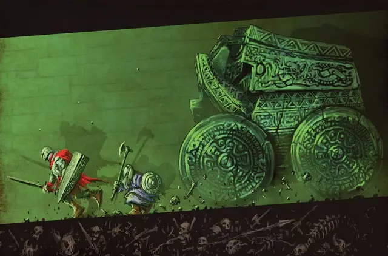

Каменный джаггернаут
Stone Juggernaut
Большой Конструкт, без мировоззрения

Класс Доспеха 15 (Природный доспех)
Хиты 157 (15к10 + 75)
Скорость 50 футов (в одном направлении, выбранном в начале его хода)
| мод | спас | ||
|---|---|---|---|
| СИЛ | 22 | +6 | +6 |
| ЛОВ | 1 | −5 | −5 |
| ТЕЛ | 21 | +5 | +5 |
| мод | спас | ||
|---|---|---|---|
| ИНТ | 2 | −4 | −4 |
| МДР | 11 | +0 | +0 |
| ХАР | 3 | −4 | −4 |
Иммунитет к урону яд; дробящий, колющий, рубящий от немагических атак, кроме нанесённых адамантиновым оружием
Иммунитет к состояниям окаменение, ослепление, отравление, сбивание с ног, паралич, очарование, глухота, испуг, истощение
Чувства слепое зрение 120 футов, пассивное Восприятие 10
Опасность 12 (8400 опыта)
Бонус мастерства +4
Особенности
Разрушительный перекат. . Джаггернаут может перемещаться по пространству существа лежащего ничком. Существо, через чьё пространство первый раз за ход проходит джаггернаут, должно совершить спасбросок Ловкости Сл 17, получив 55 (10к10) дробящего урона при неудачном спасброске или половину этого урона при успехе.
Неизменяемая форма. . Джаггернаут невосприимчив к любому заклинанию или эффекту, который изменил бы его форму.
Регенерация. . Пока у джаггернаута остаётся хотя бы 1 хит, он магическим образом восстанавливает все свои хиты на рассвете. Джаггернаут уничтожается и не регенерирует если его хиты опускаются до 0.
Осадный монстр. . Джаггернаут наносит двойной урон объектам и постройкам.
Действия
Удар. . Рукопашная атака оружием: +10 к попаданию, досягаемость 5 футов, одна цель. Попадание: 25 (3к12 + 6) дробящего урона. Если целью атаки является Большое или меньшее существо, то оно должно пройти спасбросок Силы Сл 17 или будет сбито с ног.
Описание
Каменный джаггернаут – это прочный конструкт, наполненный достаточным сознанием, чтобы избегать очевидных опасностей, таких как открытые ямы и пропасти. Он катится по открытым полям битв или катится по коридорам подземелий, сокрушая всех на своём пути. Каждый каменный джаггернаут имеет уникальную форму и внешний вид. Один может напоминать слона, украшенного бивнями, в то время как другой может выглядеть как хмурый демон с горящими глазами и обсидиановыми зубами.
Каменный джаггернаут быстр, но ему не хватает манёвренности и может двигаться только в одном направлении на своём ходу. Он не представляет опасности для существ, которых он не может раздавить пока катится. Его лучшая тактика заключается в том, чтобы врезаться в существо, сбить его с ног, а затем прокатиться по нему.